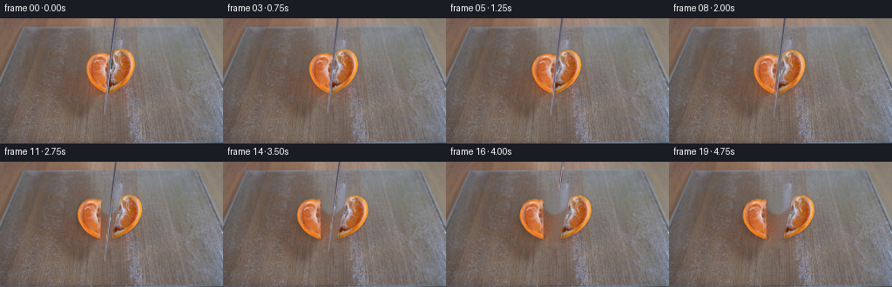
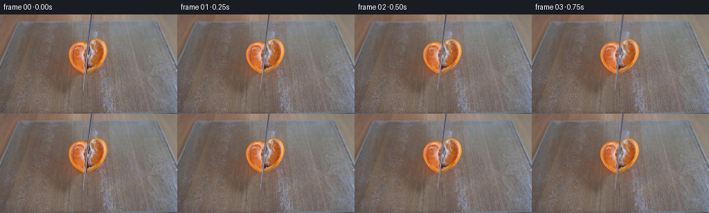

CODING AGENTS AS PIXEL WORLD MODELS
traex/GPT-6-Astra · 0041
点击播放 · 原生 RGB 像素
逐轮保存的候选
回放视频、检查图与代码变化。
每份候选均可单独播放。实际图片检查记录在下方工具轨迹中。
候选 01播放与检查图
点击播放 · 原生 RGB 像素


展开代码变化
--- 上一保存版本
+++ 本次保存版本
@@ -0,0 +1,153 @@
+from pathlib import Path
+import numpy as np
+from PIL import Image, ImageDraw
+import cv2
+from scipy.ndimage import gaussian_filter
+import artifact_io
+
+ROOT = Path(__file__).resolve().parent
+H, W = 144, 256
+src = np.asarray(Image.open(ROOT/'first_frame.png').convert('RGB')).astype(np.float32)
+yy, xx = np.mgrid[:H,:W].astype(np.float32)
+
+
+def poly_mask(points, scale=4):
+ p = Image.new('L', (W*scale,H*scale))
+ ImageDraw.Draw(p).polygon([(round(x*scale),round(y*scale)) for x,y in points],fill=255)
+ return np.asarray(p.resize((W,H),Image.Resampling.LANCZOS),dtype=np.float32)/255
+
+# Silhouette and the two sides of the incision, recovered from the source RGB.
+left_outline=[(127.7,40.5),(122.3,39.1),(116,38.5),(110.4,39.5),
+ (106.1,41.6),(103.1,45.4),(100.8,49),(99.1,53.6),(98.6,57.7),
+ (99.3,62.4),(100.9,66.5),(103,70.5),(105.6,74.4),(109.2,78.5),
+ (113.5,82.2),(117.5,84.8),(121.9,86.3),(123.1,85.8)]
+right_outline=[(127.7,39.4),(130.2,37.4),(133.8,35.5),(138.8,34.5),
+ (143.2,34.8),(147.3,37),(150.3,40),(152.9,44),(154.4,48.8),
+ (154.7,53.7),(153.7,59.2),(152,63.9),(149.8,67.5),(147.2,71.2),
+ (143.8,75.3),(139.8,79),(135.1,82.1),(130.1,84.6),(125.9,86.5),
+ (122.3,86.6)]
+left = poly_mask(left_outline)
+right = poly_mask(right_outline)
+# A precise common cut line prevents a notch or a second metal edge after cutting.
+fruit = np.maximum(left,right)
+fruit = np.maximum(fruit,poly_mask([(127.7,39.6),(130,39),(125.3,86.6),(121.8,86.6)]))
+cutx = 132.05-.115*yy
+split = np.clip((cutx-xx)/.65+.5,0,1)
+left = fruit*split
+right = fruit*(1-split)
+
+# Separate the narrow, nearly edge-on blade from the citrus texture.
+blade_region=(np.abs(xx-cutx)<2.45)&(yy<111)
+blade_mask=np.uint8(blade_region)*255
+cleanfruit=cv2.inpaint(src.astype(np.uint8),blade_mask,4,cv2.INPAINT_NS).astype(np.float32)
+# Replace the blue cast right on the freshly divided pulp with its local orange/pith.
+# Source-derived inpainting leaves the irregular segment membranes intact.
+
+remove = (fruit>.008)|((xx>cutx-2.3)&(xx<cutx+4.0)&(yy<111))
+remask=cv2.dilate(remove.astype(np.uint8),np.ones((3,3),np.uint8))*255
+bg=cv2.inpaint(src.astype(np.uint8),remask,5,cv2.INPAINT_NS).astype(np.float32)
+# The exposed glass keeps the same fine-grained texture as nearby glass.
+noise=src-gaussian_filter(src,(1.1,1.1,0))
+board_noise=np.roll(noise,63,axis=1)
+interior=cv2.distanceTransform(remask,cv2.DIST_L2,5)
+texture_strength=np.clip((interior-1)/5,0,1)
+bg += board_noise*texture_strength[...,None]*.7
+bg=np.clip(bg,0,255)
+
+# Warp premultiplied sprites; texture at the boundaries cannot leak onto the board.
+def affine_layer(rgb, alpha, dx,dy,angle,sx=1,sy=1,pivot=(124,83)):
+ a=np.deg2rad(angle)
+ mat=np.array([[np.cos(a)*sx,-np.sin(a)*sy],[np.sin(a)*sx,np.cos(a)*sy]],np.float32)
+ pv=np.array(pivot,np.float32)
+ trans=pv+np.array([dx,dy],np.float32)-mat@pv
+ M=np.column_stack((mat,trans))
+ wm=cv2.warpAffine(alpha,M,(W,H),flags=cv2.INTER_LINEAR,borderMode=cv2.BORDER_CONSTANT)
+ wp=cv2.warpAffine(rgb*alpha[...,None],M,(W,H),flags=cv2.INTER_CUBIC,borderMode=cv2.BORDER_CONSTANT)
+ color=wp/np.maximum(wm[...,None],1e-5)
+ return np.clip(color,0,255),np.clip(wm,0,1),M
+
+def over(base, color, alpha):
+ return base*(1-alpha[...,None])+color*alpha[...,None]
+
+def smooth(t):
+ t=np.clip(t,0,1)
+ return t*t*(3-2*t)
+
+# A thin, freshly exposed side face has depth rather than a flat paper-cut edge.
+# Its granular surface is sampled from orange flesh in this very image.
+strip_left=np.clip(1-np.abs(xx-(cutx-1.3))/2.1,0,1)*fruit
+strip_right=np.clip(1-np.abs(xx-(cutx+1.5))/2.1,0,1)*fruit
+side_tex=cv2.remap(cleanfruit, (xx-12).astype(np.float32),yy,cv2.INTER_LINEAR,borderMode=cv2.BORDER_REFLECT)
+side_tex=side_tex*np.array([.82,.75,.68],np.float32)
+
+# The blade extends offscreen, so its incoming portion uses the same photographed
+# steel cross-section, not a new object or a change of viewpoint.
+def blade(frame,dx,dy,angle):
+ a=np.deg2rad(angle)
+ # rotation about the contact area; an approximately vertical chopping stroke
+ qx=xx-125-dx; qy=yy-80-dy
+ bx=np.cos(a)*qx+np.sin(a)*qy+125
+ by=-np.sin(a)*qx+np.cos(a)*qy+80
+ cx=132.05-.115*by
+ rel=bx-cx
+ width=np.interp(by,[ -200,0,79,85,100,108,111],[1.65,1.65,1.55,1.25,.9,.55,0])
+ alpha=np.clip(width+.45-np.abs(rel),0,1)*np.clip((111-by)/1.2,0,1)
+ # Sample the original knife. Reflection changes gently during the cut.
+ sy=np.where(by<0,2+np.mod(-by,7),by).astype(np.float32)
+ sy=np.clip(sy,0,110)
+ sx=(132.05-.115*sy+rel).astype(np.float32)
+ steel=cv2.remap(src,sx,sy,cv2.INTER_LINEAR,borderMode=cv2.BORDER_REPLICATE)
+ return over(frame,steel,alpha)
+
+frames=[]
+for i in range(20):
+ if i==0:
+ frames.append(src.astype(np.uint8));continue
+ # Pressure, breakthrough, then independent sliding/settling of the two quarters.
+ pressure=smooth(i/9)
+ release=smooth((i-7)/6)
+ settle=smooth((i-12)/3)
+ gap=1.0*pressure+8.6*release+1.0*settle
+ theta=7.6*release+.5*settle
+ compression=1-.016*np.sin(np.pi*min(i/12,1))
+ bounce=(.38*np.exp(-.8*(i-12))*np.sin(2.2*(i-12))) if i>=12 else 0
+ lp=(-gap,1.0*pressure+1.8*release+bounce,-theta,1,compression,(121.8,84.5))
+ rp=(gap*.80,.7*pressure+.75*release-.4*bounce,theta*.83,1,compression,(124,84.5))
+ lc,lm,lmat=affine_layer(cleanfruit,left,*lp)
+ rc,rm,rmat=affine_layer(cleanfruit,right,*rp)
+ frame=bg.copy()
+ # Soft contact shadows develop only in the newly uncovered strip of glass.
+ sh=np.maximum(lm,rm)
+ sh=cv2.warpAffine(sh,np.array([[1,0,-3],[0,1,4]],np.float32),(W,H))
+ sh=gaussian_filter(sh,2.4)
+ original_sh=gaussian_filter(cv2.warpAffine(fruit,np.array([[1,0,-3],[0,1,4]],np.float32),(W,H)),2.4)
+ additional=np.clip(sh-original_sh*.82,0,1)
+ frame*=1-.15*additional[...,None]
+ # A narrow sidewall becomes visible as the separated pieces tip outward.
+ thickness=release*.95
+ if thickness>0:
+ slc,slm,_=affine_layer(side_tex,strip_left,lp[0]+1.25*release,lp[1]+1.5*release,*lp[2:])
+ src_,srm,_=affine_layer(side_tex,strip_right,rp[0]-.6*release,rp[1]+1.4*release,*rp[2:])
+ frame=over(frame,slc,slm*thickness)
+ frame=over(frame,src_,srm*thickness)
+ # The right section lies slightly farther away.
+ frame=over(frame,rc,rm)
+ frame=over(frame,lc,lm)
+ # A short draw-cut and downward pressure; after contact, the knife lifts out.
+ if i<=11:
+ dy=5.8*smooth(i/10)+.5*np.sin(i*1.65)*np.sin(np.pi*i/12)
+ dx=.34*np.sin(i*1.8)*np.sin(np.pi*i/12)
+ angle=.34*np.sin(i*1.5)*np.sin(np.pi*i/12)
+ else:
+ dy=[5.8,3.2,-7,-27,-53,-83,-117,-145][i-12]
+ dx=[0,.3,1.5,3.7,7,11,16,21][i-12]
+ angle=[0,.25,.6,1.0,1.5,1.8,2.0,2.0][i-12]
+ frame=blade(frame,dx,dy,angle)
+ frames.append(np.clip(np.rint(frame),0,255).astype(np.uint8))
+
+frames=np.stack(frames)
+artifact_io.save(frames, ROOT)
+if __name__=='__main__':
+ assert frames.shape==(20,144,256,3)
+ assert np.array_equal(frames[0],np.asarray(Image.open(ROOT/'first_frame.png').convert('RGB')))
+ print('Saved 20 RGB frames, 256x144, 4 fps.')
可观测工具轨迹
实际执行的命令与返回图片。
命令 1exit 0
/bin/bash -lc "ls -la && cat prompt.txt && printf '\\n---RULES---\\n' && cat GENERATION_RULES.md"
命令 2exit 0
/bin/bash -lc "cat artifact_io.py && python - <<'PY'
from PIL import Image
import numpy as np
im=np.array(Image.open('first_frame.png'));print(im.shape)
print('ranges',im.min((0,1)),im.max((0,1)))
for y in range(0,144,4):
s=''
for x in range(0,256,4):
r,g,b=im[y:y+4,x:x+4,:3].mean((0,1))
if r>g*1.35 and g>b*1.25 and r>110:c='O'
elif r>g*1.15 and r>b*1.18 and r>70:c='s'
elif max(r,g,b)-min(r,g,b)<22:
c=' .:-=+*#%@'[min(9,int((r+g+b)/3)//26)]
elif b>r*1.1:c='b'
elif g>r*1.1:c='g'
else:c='x'
s+=c
print(s)
PY"命令 3exit 0
/bin/bash -lc "python - <<'PY'
import numpy as np
from PIL import Image
from scipy.cluster.vq import kmeans2
im=np.array(Image.open('first_frame.png'))
cent,lab=kmeans2(im.reshape(-1,3).astype(float),14,minit='++',seed=4,iter=30)
order=np.argsort(cent.mean(1));conv=np.zeros(14,int);conv[order]=np.arange(14)
chars='0123456789ABCD'
for i,j in enumerate(order):print(chars[i],np.round(cent[j]).astype(int))
small=np.array(Image.fromarray(im).resize((128,72)))
l=np.linalg.norm(small[:,:,None,:]-cent[None,None,:,:],axis=-1).argmin(2)
for y,row in enumerate(l):print(f'{2*y:3}', ''.join(chars[conv[c]] for c in row))
PY"命令 4exit 0
/bin/bash -lc "python - <<'PY'
from PIL import Image
import numpy as np
im=np.array(Image.open('first_frame.png'))
# every pixel of object with color class
chars=' .:-=+*#%@'
for y in range(28,91):
row=''
for x in range(92,160):
r,g,b=map(float,im[y,x]); c=' '
if r-g>55 and g-b>35: c='o' if r<210 else 'O'
elif r-g>35 and g-b>20:c='t'
elif r-g>20 and r>170 and b>100:c='p'
elif r>175 and g>140 and b>120:c='P'
elif (max(r,g,b)-min(r,g,b)<25 or b>r):c=chars[min(9,int((r+g+b)/3)//26)]
else:c='x'
row+=c
print(f'{y:3} {row}')
print('\\nLINE DATA')
for y in [0,20,30,35,40,45,50,60,70,75,80,85,90,100,110]:
print('Y',y, ' '.join(f'{x}:{tuple(im[y,x])}' for x in range(118,140)))
PY"命令 5exit 0
/bin/bash -lc "python - <<'PY'
import importlib.util
for x in ['cv2','scipy','PIL']:print(x, bool(importlib.util.find_spec(x)))
import numpy as np
from PIL import Image
im=np.array(Image.open('first_frame.png')).astype(float)
for y in range(0,116,4):
row=[]
for x in range(110,146):
r,g,b=im[y,x];
row.append('B' if b-r>15 else 'b' if b-r>0 else 'C' if b-g>5 else '.' )
print(y,''.join(row))
PY"命令 6exit 0
/bin/bash -lc "python - <<'PY'
import numpy as np
from PIL import Image
im=np.array(Image.open('first_frame.png')).astype(float)
r,g,b=im.transpose(2,0,1)
for y in range(30,93):
a=np.where((r[y]>150)&(r[y]-g[y]>38)&(g[y]-b[y]>22)&(np.arange(256)>92)&(np.arange(256)<160))[0]
if len(a):print(y,a.min(),a.max())
PY"命令 7exit 0
/bin/bash -lc "python - <<'PY'
import numpy as np
from PIL import Image
im=np.array(Image.open('first_frame.png')).astype(float)
for y in range(0,116,2):
xc=132-.112*y;xs=np.arange(round(xc)-3,round(xc)+5)
print(y,' '.join('%d:%d,%d,%d'%(x,*im[y,x]) for x in xs))
PY"命令 8exit 0
/bin/bash -lc "cat > generate.py <<'PY'
from pathlib import Path
import numpy as np
from PIL import Image, ImageDraw
import cv2
from scipy.ndimage import gaussian_filter
import artifact_io
ROOT = Path(__file__).resolve().parent
H, W = 144, 256
src = np.asarray(Image.open(ROOT/'first_frame.png').convert('RGB')).astype(np.float32)
yy, xx = np.mgrid[:H,:W].astype(np.float32)
def poly_mask(points, scale=4):
p = Image.new('L', (W*scale,H*scale))
ImageDraw.Draw(p).polygon([(round(x*scale),round(y*scale)) for x,y in points],fill=255)
return np.asarray(p.resize((W,H),Image.Resampling.LANCZOS),dtype=np.float32)/255
# Silhouette and the two sides of the incision, recovered from the source RGB.
left_outline=[(127.7,40.5),(122.3,39.1),(116,38.5),(110.4,39.5),
(106.1,41.6),(103.1,45.4),(100.8,49),(99.1,53.6),(98.6,57.7),
(99.3,62.4),(100.9,66.5),(103,70.5),(105.6,74.4),(109.2,78.5),
(113.5,82.2),(117.5,84.8),(121.9,86.3),(123.1,85.8)]
right_outline=[(127.7,39.4),(130.2,37.4),(133.8,35.5),(138.8,34.5),
(143.2,34.8),(147.3,37),(150.3,40),(152.9,44),(154.4,48.8),
(154.7,53.7),(153.7,59.2),(152,63.9),(149.8,67.5),(147.2,71.2),
(143.8,75.3),(139.8,79),(135.1,82.1),(130.1,84.6),(125.9,86.5),
(122.3,86.6)]
left = poly_mask(left_outline)
right = poly_mask(right_outline)
# A precise common cut line prevents a notch or a second metal edge after cutting.
fruit = np.maximum(left,right)
fruit = np.maximum(fruit,poly_mask([(127.7,39.6),(130,39),(125.3,86.6),(121.8,86.6)]))
cutx = 132.05-.115*yy
split = np.clip((cutx-xx)/.65+.5,0,1)
left = fruit*split
right = fruit*(1-split)
# Separate the narrow, nearly edge-on blade from the citrus texture.
blade_region=(np.abs(xx-cutx)<2.45)&(yy<111)
blade_mask=np.uint8(blade_region)*255
cleanfruit=cv2.inpaint(src.astype(np.uint8),blade_mask,4,cv2.INPAINT_NS).astype(np.float32)
# Replace the blue cast right on the freshly divided pulp with its local orange/pith.
# Source-derived inpainting leaves the irregular segment membranes intact.
remove = (fruit>.008)|((xx>cutx-2.3)&(xx<cutx+4.0)&(yy<111))
remask=cv2.dilate(remove.astype(np.uint8),np.ones((3,3),np.uint8))*255
bg=cv2.inpaint(src.astype(np.uint8),remask,5,cv2.INPAINT_NS).astype(np.float32)
# The exposed glass keeps the same fine-grained texture as nearby glass.
noise=src-gaussian_filter(src,(1.1,1.1,0))
board_noise=np.roll(noise,63,axis=1)
interior=cv2.distanceTransform(remask,cv2.DIST_L2,5)
texture_strength=np.clip((interior-1)/5,0,1)
bg += board_noise*texture_strength[...,None]*.7
bg=np.clip(bg,0,255)
# Warp premultiplied sprites; texture at the boundaries cannot leak onto the board.
def affine_layer(rgb, alpha, dx,dy,angle,sx=1,sy=1,pivot=(124,83)):
a=np.deg2rad(angle)
mat=np.array([[np.cos(a)*sx,-np.sin(a)*sy],[np.sin(a)*sx,np.cos(a)*sy]],np.float32)
pv=np.array(pivot,np.float32)
trans=pv+np.array([dx,dy],np.float32)-mat@pv
M=np.column_stack((mat,trans))
wm=cv2.warpAffine(alpha,M,(W,H),flags=cv2.INTER_LINEAR,borderMode=cv2.BORDER_CONSTANT)
wp=cv2.warpAffine(rgb*alpha[...,None],M,(W,H),flags=cv2.INTER_CUBIC,borderMode=cv2.BORDER_CONSTANT)
color=wp/np.maximum(wm[...,None],1e-5)
return np.clip(color,0,255),np.clip(wm,0,1),M
def over(base, color, alpha):
return base*(1-alpha[...,None])+color*alpha[...,None]
def smooth(t):
t=np.clip(t,0,1)
return t*t*(3-2*t)
# A thin, freshly exposed side face has depth rather than a flat paper-cut edge.
# Its granular surface is sampled from orange flesh in this very image.
strip_left=np.clip(1-np.abs(xx-(cutx-1.3))/2.1,0,1)*fruit
strip_right=np.clip(1-np.abs(xx-(cutx+1.5))/2.1,0,1)*fruit
side_tex=cv2.remap(cleanfruit, (xx-12).astype(np.float32),yy,cv2.INTER_LINEAR,borderMode=cv2.BORDER_REFLECT)
side_tex=side_tex*np.array([.82,.75,.68],np.float32)
# The blade extends offscreen, so its incoming portion uses the same photographed
# steel cross-section, not a new object or a change of viewpoint.
def blade(frame,dx,dy,angle):
a=np.deg2rad(angle)
# rotation about the contact area; an approximately vertical chopping stroke
qx=xx-125-dx; qy=yy-80-dy
bx=np.cos(a)*qx+np.sin(a)*qy+125
by=-np.sin(a)*qx+np.cos(a)*qy+80
cx=132.05-.115*by
rel=bx-cx
width=np.interp(by,[ -200,0,79,85,100,108,111],[1.65,1.65,1.55,1.25,.9,.55,0])
alpha=np.clip(width+.45-np.abs(rel),0,1)*np.clip((111-by)/1.2,0,1)
# Sample the original knife. Reflection changes gently during the cut.
sy=np.where(by<0,2+np.mod(-by,7),by).astype(np.float32)
sy=np.clip(sy,0,110)
sx=(132.05-.115*sy+rel).astype(np.float32)
steel=cv2.remap(src,sx,sy,cv2.INTER_LINEAR,borderMode=cv2.BORDER_REPLICATE)
return over(frame,steel,alpha)
frames=[]
for i in range(20):
if i==0:
frames.append(src.astype(np.uint8));continue
# Pressure, breakthrough, then independent sliding/settling of the two quarters.
pressure=smooth(i/9)
release=smooth((i-7)/6)
settle=smooth((i-12)/3)
gap=1.0*pressure+8.6*release+1.0*settle
theta=7.6*release+.5*settle
compression=1-.016*np.sin(np.pi*min(i/12,1))
bounce=(.38*np.exp(-.8*(i-12))*np.sin(2.2*(i-12))) if i>=12 else 0
lp=(-gap,1.0*pressure+1.8*release+bounce,-theta,1,compression,(121.8,84.5))
rp=(gap*.80,.7*pressure+.75*release-.4*bounce,theta*.83,1,compression,(124,84.5))
lc,lm,lmat=affine_layer(cleanfruit,left,*lp)
rc,rm,rmat=affine_layer(cleanfruit,right,*rp)
frame=bg.copy()
# Soft contact shadows develop only in the newly uncovered strip of glass.
sh=np.maximum(lm,rm)
sh=cv2.warpAffine(sh,np.array([[1,0,-3],[0,1,4]],np.float32),(W,H))
sh=gaussian_filter(sh,2.4)
original_sh=gaussian_filter(cv2.warpAffine(fruit,np.array([[1,0,-3],[0,1,4]],np.float32),(W,H)),2.4)
additional=np.clip(sh-original_sh*.82,0,1)
frame*=1-.15*additional[...,None]
# A narrow sidewall becomes visible as the separated pieces tip outward.
thickness=release*.95
if thickness>0:
slc,slm,_=affine_layer(side_tex,strip_left,lp[0]+1.25*release,lp[1]+1.5*release,*lp[2:])
src_,srm,_=affine_layer(side_tex,strip_right,rp[0]-.6*release,rp[1]+1.4*release,*rp[2:])
frame=over(frame,slc,slm*thickness)
frame=over(frame,src_,srm*thickness)
# The right section lies slightly farther away.
frame=over(frame,rc,rm)
frame=over(frame,lc,lm)
# A short draw-cut and downward pressure; after contact, the knife lifts out.
if i<=11:
dy=5.8*smooth(i/10)+.5*np.sin(i*1.65)*np.sin(np.pi*i/12)
dx=.34*np.sin(i*1.8)*np.sin(np.pi*i/12)
angle=.34*np.sin(i*1.5)*np.sin(np.pi*i/12)
else:
dy=[5.8,3.2,-7,-27,-53,-83,-117,-145][i-12]
dx=[0,.3,1.5,3.7,7,11,16,21][i-12]
angle=[0,.25,.6,1.0,1.5,1.8,2.0,2.0][i-12]
frame=blade(frame,dx,dy,angle)
frames.append(np.clip(np.rint(frame),0,255).astype(np.uint8))
frames=np.stack(frames)
artifact_io.save(frames, ROOT)
if __name__=='__main__':
assert frames.shape==(20,144,256,3)
assert np.array_equal(frames[0],np.asarray(Image.open(ROOT/'first_frame.png').convert('RGB')))
print('Saved 20 RGB frames, 256x144, 4 fps.')
PY
python generate.py"命令 9exit 0
/bin/bash -lc "python - <<'PY'
from PIL import Image
import numpy as np
ims=np.stack([np.array(Image.open(f'frames/{i:02}.png')) for i in range(20)]).astype(float)
for i in range(1,20):
d=np.abs(ims[i]-ims[i-1]); mask=d.max(2)>20
print(i,'mean diff',round(d.mean(),2),'changed',int(mask.sum()),'bbox', (np.where(mask)[1].min(),np.where(mask)[0].min(),np.where(mask)[1].max(),np.where(mask)[0].max()) if mask.any() else None)
print('FINAL RGB silhouette:')
im=ims[-1]
for y in range(29,97,2):
s=''
for x in range(78,176):
r,g,b=im[y,x]
if r-g>48 and g-b>30 and r>145:s+='O'
elif r-g>30 and r>150:s+='p'
elif r>175 and g>145 and b>120:s+='P'
else:s+=' '
print(y,s)
PY"命令 10exit 0
/bin/bash -lc "python - <<'PY' import generate as g import numpy as np for y in [38,45,50,60,70,80,85]: print(y,[(x,g.bg[y,x].astype(int).tolist()) for x in [100,110,120,125,130,140,150]]) PY"
保存候选 1 份；完成命令 10 次；可验证图片返回 0 张。原始 API 响应与完整日志保留在本地。